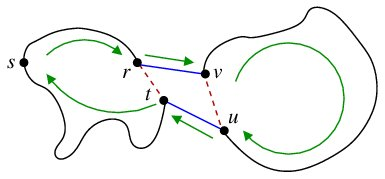
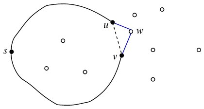
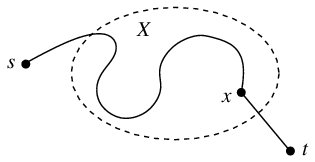

Programming Assignment 1
The Traveling Salesperson Problem (TSP)
A set of n cities along with the costs d(i,j) of traveling between cities i and j are given. Assume that the cost function is symmetric, that is, d(i,j) = d(j,i) for all i and j. Assume also that d(i,i) = 0 for all i. The task is to find a closed route (cycle) through the cities such that each city is visited once and only once, and the total cost of travel in the route is minimized. Since the salesperson is making a closed tour, there is no harm in assuming that the tour starts (and ends) at City 0.
The TSP is a difficult computational problem. In your second algorithms course, you would learn that no polynomial-time algorithms exist for solving TSP (unless P = NP, an unresolved question which is popularly believed to be false). In this exercise, you are supposed to implement several algorithms to solve the TSP. These algorithms are of two types. First, you implement two algorithms that compute the exact minimum cost (along with a shortest route). These algorithms are slow, and cannot handle a large number of cities. Algorithms of the second type are fast but are not guaranteed to supply the minimum possible solution. They instead supply only close-to-best (suboptimal) solutions.
Before implementing the algorithms for TSP, you need to prepare data for n cities. Read n from the user, and generate each city as a point (x,y) in the plane. You may take a random value between 0 and 999 (both inclusive) as each of the coordinates. After the cities are generated, store in a two-dimensional (n x n) table the distances d(i,j) between pairs of cities. You may store these distances as integers (truncated or rounded values of Euclidean distances). For a reason that will be clear soon, it would be worthwhile to sort the cities initially with respect to their x-coordinates, before the distances are computed and stored in the 2-d matrix.
The Exact Solution
Generate (recursively, perhaps) all the (n - 1)! cyclic permutations of the n cities. Each such permutation would be of the form 0,i1,i2,...,in-1, where i1,i2,...,in-1 is a permutation of 1,2,...,n - 1. For each cyclic permutation, compute the cost of the round trip 0,i2,i2,...,in-1,0, and determine the minimum over all these permutations. This gives you the exact minimum cost, but takes O(n!) running time. The implication is that this algorithm can handle only small vales of n (like n <= 15) in a reasonable amount of time.
A Divide-and-conquer Algorithm
Suppose that the cities are sorted with respect to their x-coordinates. We recursively compute a shortest tour through the left n/2 cities, and also a shortest tour through the right n/2 cities. In the merging step, we identify the edge rt in the left tour and the edge uv in the right tour such that replacing these edges by rv and ut gives the cheapest tour among all choices of r and u. The situation is depicted in the following figure.
 This divide-and-conquer algorithm runs in O(n2) time and can handle large values of n. However, this does not look at all possible tours through n cities, and so the solution computed by this algorithm is usually not optimal.
A Greedy Algorithm
A possible greedy approach to construct a suboptimal TSP tour is to iteratively add one city at a time to the tour. The initial tour starts and ends at a specified start city (say, City 0) without visiting any other city. When the partially constructed tour covers k cities, we identify an edge uv in the tour and a yet unvisited city w such that replacing uv by the two-leg travel uwv leads to the minimum possible increase in the cost. Here, the minimum is taken over all choices of u and w. After n - 1 iterations, all cities are included in the tour. The greedy algorithm runs in O(n3) time.
The Bellman-Held-Karp Dynamic-programming Algorithm
A dynamic-programming algorithm proposed independently by Bellman and by Held and Karp is now explained. This algorithm outputs a shortest tour in less than O(n!) time.Let C denote the set of cities, and let s be any specific start city. A natural choice is C = {0,1,2,...,n - 1}, and s = 0. Let t be a city other than s, and let X be any subset of C not containing s and t. By B(s,X,t), we denote the cost of a shortest st path that goes through each city in X once and only once. The best costs B(s,X,t) can be inductively defined as follows. If X is the empty set, then B(s,X,t) is the distance d(s,t). Otherwise, B(s,X,t) is the minimum of B(s,X - {x},x) + d(x,t), taken over all choices of the city x in the subset X of C.
 For each t not equal to s, the best cost bt = B (s,C - {s,t},t) is computed by dynamic programming. Finally, the minimum of bt + d(t,s) (over all choices of t different from s) is the cost of the shortest TSP tour.
Subsets of C can be represented by n-bit integers. The i-th city is present in a subset if and only if the i-th bit is 1. Since s is always the first argument in B, it suffices to maintain B as a two-dimensional array indexed by a subset number and a target city t. Setting to zero a one-bit in an integer standing for a subset indicates removal of a city from the subset. This new integer is certainly smaller than the original integer.
So far, we have computed the cost of the best TSP tour through the n cities. The corresponding tour can be computed with only a little amount of extra effort. In addition to the two-dimensional array B(s,X,t), we maintain another two-dimensional array L(s,X,t) indexed by the subset X and the target city t. L(s,X,t) stands for the city visited just before reaching t following the shortest sXt path. If X is the empty set, L(s,X,t) is s. Otherwise, we compute B(s,X,t) as the minimum of B(s,X - {x},x) + d(x,t) over all possible choices of x in X. That particular choice of x which yields the minimum value is stored as L(s,X,t). The tables B and L are updated simultaneously. At the final stage, we find the best t for which bt + d(t,s) is minimized. This t happens to be the source of the last leg of the TSP tour (the destination is the start city s). The city x visited just before t in the best TSP tour is stored as L(s,C-{s,t},t). The city y visited just before reaching x is stored as L(s,C-{s,t,x},x), and the city just before y is L(s,C-{s,t,x,y},y), and so on. In this way, we generate the optimal TSP tour backward until we discover the start city s as the last city visited.
The Bellman-Held-Karp algorithm runs in O(2nn2) time. This expression, although exponential in n, is better than O(n!). In fact, the dynamic-programming algorithm gives the optimal solution in a reasonable amount of time even for n as large as 25.
Sample Output
Present your output as in the following format.( 21,993) ( 36,490) ( 59,101) ( 87,740) (193,997) (286, 19) (561,131) (737,100) (821,614) (856,246) (958,136) (962,967) Exact TSP : 0-3-1-2-5-6-7-10-9-8-11-4. cost = 3683 Divide-and-Conquer TSP : 0-1-2-5-6-7-9-10-11-8-3-4. cost = 4350 Greedy TSP : 0-1-2-5-6-7-10-9-8-11-3-4. cost = 4082 Dynamic programming TSP : 0-4-11-8-9-10-7-6-5-2-1-3. cost = 3683Submission site